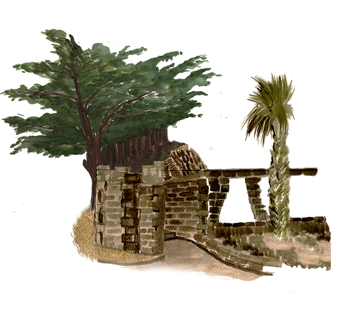
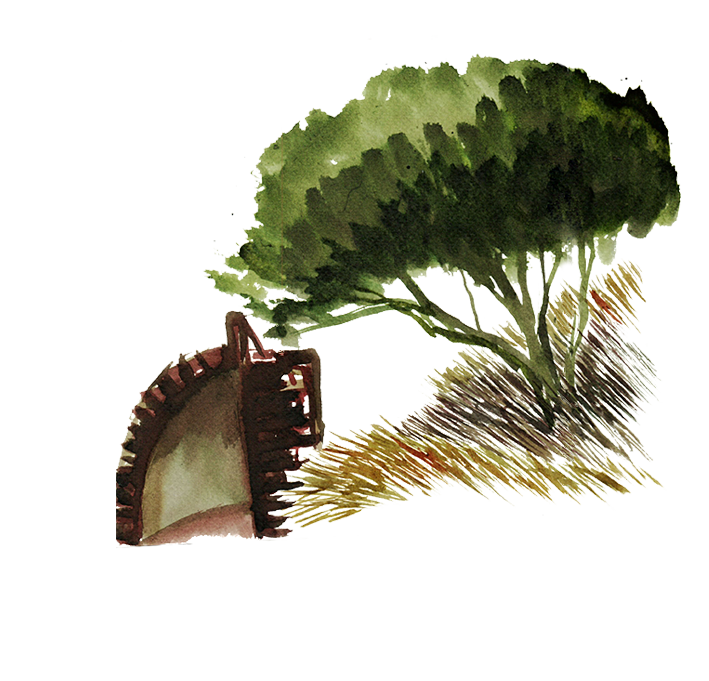
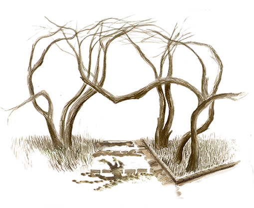

Escultura
Adagio Cumplido
Recorriendo el
acoger de la
ciudad Abierta
Cementerio
Ciudad Abierta
Escultura
Adagio Cumplido


Dentro de la construcción del espacio de la ciudad abierta se distinguen dos formas de recorrer su extensión, siendo estas el “Recorrer a través del "entre ver" de la construcción natural de formas irregulares” y “Recorrer lo amplio y abierto de la extensión”.
El atravesar de la extensión se encuentra presente en el “Cementerio de la Ciudad Abierta”, lugar de recogimiento y retiro. Ante este retiro ¿cómo nos acoge la naturaleza y el artificio del hombre?
Hospedería del
Megaterio

— ¿No entiendo por qué a este puente se le diga que es una estatua?–
—¡Ah! eso te lo puedo explicar, este puente estaba allá y lo trajeron aquí.
Ahora tú sabes lo que es un puente ¿no?–
— Sí–
— Une una orilla con otra orilla, por eso es un puente, pero anda hasta allá,
y vas a ver cómo este puente no une con aquella orilla ¡anda, anda ver!–


Vestal del
Jardín

— ¿No entiendo por qué a este puente se le diga que es una estatua?–
—¡Ah! eso te lo puedo explicar, este puente estaba allá y lo trajeron aquí.
Ahora tú sabes lo que es un puente ¿no?–
— Sí–
— Une una orilla con otra orilla, por eso es un puente, pero anda hasta allá,
y vas a ver cómo este puente no une con aquella orilla ¡anda, anda ver!–

— ¿No entiendo por qué a este puente se le diga que es una estatua?–
—¡Ah! eso te lo puedo explicar, este puente estaba allá y lo trajeron aquí.
Ahora tú sabes lo que es un puente ¿no?–
— Sí–
— Une una orilla con otra orilla, por eso es un puente, pero anda hasta allá,
y vas a ver cómo este puente no une con aquella orilla ¡anda, anda ver!–